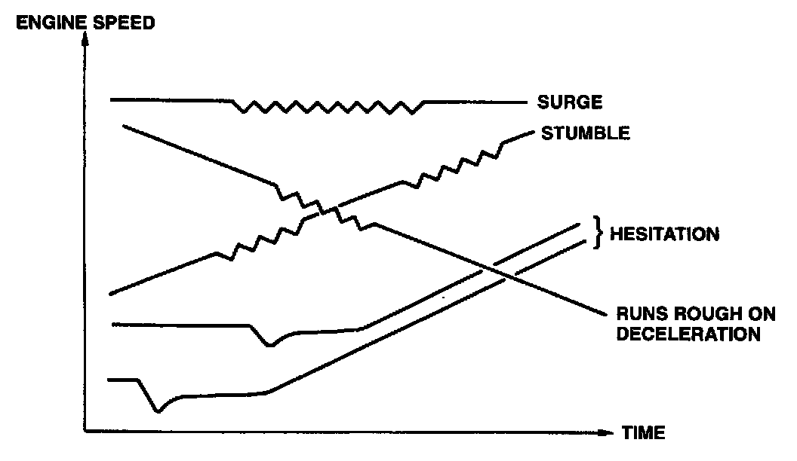

Description of Driveability Problems

- STUMBLE: Mildly irregular performance during acceleration.
- HESITATION: A dip or flat spot in performance just after the accelerator pedal is depressed.
- SURGE: Continuous irregular performance during cruising.